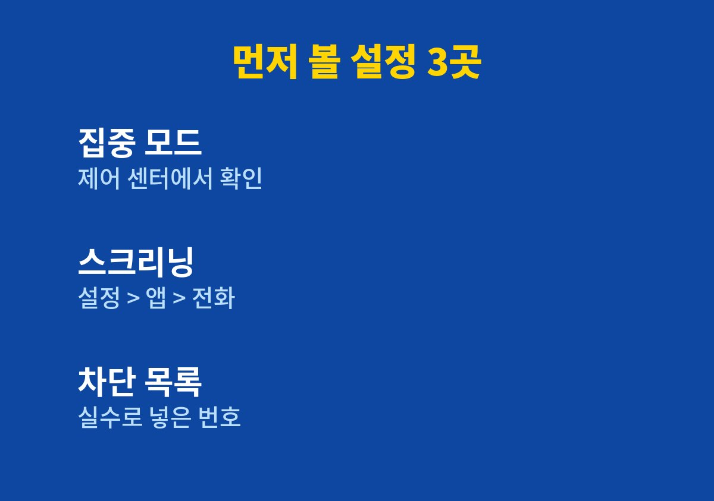
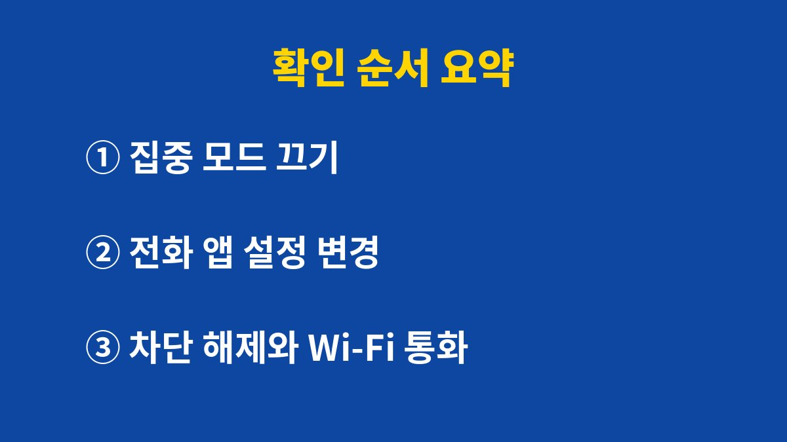

아이폰 전화 벨소리가 안 울리고 바로 음성사서함으로 넘어가는 문제는 대부분 고장이 아니라 집중 모드나 알 수 없는 발신자 설정에서 시작된다.
애플 지원 문서가 점검하라고 안내하는 네 곳을 메뉴 이름 그대로 순서대로 정리했다.
부재중 기록만 남아 있고 진동조차 없었다면 아래 순서로 보면 된다.
수신 화면도 없이 부재중 전화 목록에만 번호가 남는 경우가 있다.
배터리나 통신 문제를 먼저 떠올리기 쉽지만 애플 지원 문서는 설정부터 보라고 안내한다.
시작하기 전에 iOS를 최신 버전으로 올리고 무음 모드 스위치를 끈 상태인지부터 본다.
설정 화면을 열기 전에 이 네 가지를 머릿속에 두고 있으면 훨씬 빨리 끝난다.
방해금지 모드, 수면, 업무 같은 집중 모드가 켜져 있으면 전화가 울리지 않는다.
상단 상태 표시줄의 달 모양 아이콘이 힌트가 된다.
자기 전에 켜 둔 수면 집중 모드가 아침까지 남아 있는 경우도 있다.
택배 기사나 병원처럼 저장하지 않은 번호의 전화만 놓쳤다면 알 수 없는 발신자 스크리닝이 켜져 있을 가능성이 높다.
이 설정은 연락처에 없는 번호를 무음 처리한다.
통화 필터링의 알 수 없는 발신자까지 켜 두면 최근 통화 목록에서도 따로 분류된다.
예를 들어 병원에서 예약 확인 전화를 걸었는데 벨이 한 번도 울리지 않고 부재중으로만 남은 장면을 떠올리면 된다.
이때 번호가 연락처에 없었다면 스크리닝이 가장 먼저 의심되는 원인이다.
반대로 가족 전화까지 놓쳤다면 집중 모드나 차단 목록을 먼저 본다.
| 증상 | 의심할 설정 | 확인 위치 |
|---|---|---|
| 모든 전화가 조용함 | 집중 모드 | 제어 센터 집중 모드 영역 |
| 저장 안 한 번호만 놓침 | 알 수 없는 발신자 스크리닝 | 설정 > 앱 > 전화 |
| 최근 통화에 안 보임 | 통화 필터링 알 수 없는 발신자 | 설정 > 앱 > 전화 |
| 특정 번호만 안 울림 | 차단된 연락처 | 설정 > 앱 > 전화 |

표에서 해당하는 줄이 하나면 그 항목만 고치면 된다.
두 줄 이상 겹치는 경우가 의외로 많아서 나는 네 곳을 한 번에 훑어보는 편이다.
공식 안내는 설정을 바꾼 뒤 직접 전화를 받아 보라고까지 하지는 않지만, 실제로는 다른 전화기로 한 번 걸어 보는 것이 가장 확실한 확인이다.
설정 화면의 문구만 보고는 바뀐 상태를 놓치기 쉽다.

여섯 번째 항목의 차단 해제는 의외로 효과가 큰 단계다.
가족이나 거래처 번호가 예전에 실수로 차단되어 있던 경우가 있기 때문이다.
스팸 전화가 하루에도 몇 통씩 오는 사람에게 스크리닝을 끄라는 조언은 맞지 않는다.
그럴 때는 스크리닝은 그대로 두고 자주 받는 배달·병원 번호만 연락처에 저장하는 쪽이 낫다.
설정 목록에 Wi-Fi 통화가 보이지 않으면 이동통신사가 지원하지 않는 것일 수 있다.
통화 필터링을 켜 두면 알 수 없는 발신자의 전화가 최근 통화 목록에서 별도 목록으로 걸러진다.
그래서 놓친 전화를 찾으려면 최근 통화 화면의 필터 항목도 같이 열어 봐야 한다.
나는 이 목록을 한 달에 한 번쯤 비우듯 훑어보며 중요한 번호가 섞여 있는지 확인한다.
네 곳을 모두 확인했는데도 벨이 울리지 않으면 통신사 고객센터에 착신 전환 설정이 걸려 있는지 묻는 것이 빠르다.
집에서만 안 울린다면 신호보다 설정이 원인일 가능성이 높고, 밖에서만 안 울린다면 Wi-Fi 통화 설정을 먼저 본다.
오늘은 부재중 기록이 있는 번호 하나에 직접 전화를 걸어 보고 벨이 울리는지만 확인해 보면 된다.
참고 자료: 애플 지원 「iPhone에서 전화 벨소리가 울리지 않고 바로 음성 사서함으로 연결되는 경우」(2026년 11월 확인)
※ 2026년 기준 공식 안내를 바탕으로 정리한 글이며, 기기·앱 버전에 따라 메뉴 이름이 다를 수 있다.